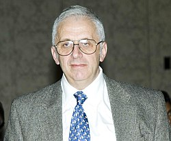

Grigory Margulis | |
|---|---|
Григорий Маргулис | |
 Margulis in 2006 | |
| Born | February 24, 1946 |
| Education | Moscow State University (BS, MS, PhD) |
| Known for | Diophantine approximation Lie groups Superrigidity theorem Arithmeticity theorem Expander graphs Oppenheim conjecture |
| Awards | Fields Medal (1978) Lobachevsky Prize (1996) Wolf Prize (2005) Abel Prize (2020) |
| Scientific career | |
| Fields | Mathematics |
| Institutions | Yale University |
| Thesis | On some aspects of the theory of Anosov flows (1970) |
| Yakov Sinai | |
Doctoral students | Emmanuel Breuillard Hee Oh |
.jpg){kind=link}
Grigory Aleksandrovich Margulis (Russian: Григо́рий Алекса́ндрович Маргу́лис, first name often given as Gregory, Grigori or Gregori; born February 24, 1946) is a Russian-American[1] mathematician known for his work on lattices in Lie groups, and the introduction of methods from ergodic theory into diophantine approximation. He was awarded a Fields Medal in 1978, a Wolf Prize in Mathematics in 2005, and an Abel Prize in 2020 (with Hillel Furstenberg), becoming the fifth mathematician to receive the three prizes.[2] In 1991, he joined the faculty of Yale University, where he is currently the Erastus L. De Forest Professor of Mathematics.[3]
Biography
Margulis was born to a Russian family of Lithuanian Jewish descent in Moscow, Soviet Union. At age 16 in 1962 he won the silver medal at the International Mathematical Olympiad. He received his PhD in 1970 from the Moscow State University, starting research in ergodic theory under the supervision of Yakov Sinai. Early work with David Kazhdan produced the Kazhdan–Margulis theorem, a basic result on discrete groups. His superrigidity theorem from 1975 clarified an area of classical conjectures about the characterisation of arithmetic groups amongst lattices in Lie groups.
He was awarded the Fields Medal in 1978, but was not permitted to travel to Helsinki to accept it in person, allegedly due to antisemitism against Jewish mathematicians in the Soviet Union.[4] His position improved, and in 1979 he visited Bonn, and was later able to travel freely, though he still worked in the Institute of Problems of Information Transmission, a research institute rather than a university. In 1991, Margulis accepted a professorial position at Yale University.
Margulis was elected a member of the U.S. National Academy of Sciences in 2001.[5] In 2012 he became a fellow of the American Mathematical Society.[6]
In 2005, Margulis received the Wolf Prize for his contributions to theory of lattices and applications to ergodic theory, representation theory, number theory, combinatorics, and measure theory.
In 2020, Margulis received the Abel Prize jointly with Hillel Furstenberg "For pioneering the use of methods from probability and dynamics in group theory, number theory and combinatorics."[7]
Mathematical contributions
Margulis's early work dealt with Kazhdan's property (T) and the questions of rigidity and arithmeticity of lattices in semisimple algebraic groups of higher rank over a local field. It had been known since the 1950s (Borel, Harish-Chandra) that a certain simple-minded way of constructing subgroups of semisimple Lie groups produces examples of lattices, called arithmetic lattices. It is analogous to considering the subgroup SL(n,Z) of the real special linear group SL(n,R) that consists of matrices with integer entries. Margulis proved that under suitable assumptions on G (no compact factors and split rank greater or equal than two), any (irreducible) lattice Γ in it is arithmetic, i.e. can be obtained in this way. Thus Γ is commensurable with the subgroup G(Z) of G, i.e. they agree on subgroups of finite index in both. Unlike general lattices, which are defined by their properties, arithmetic lattices are defined by a construction. Therefore, these results of Margulis pave a way for classification of lattices. Arithmeticity turned out to be closely related to another remarkable property of lattices discovered by Margulis. Superrigidity for a lattice Γ in G roughly means that any homomorphism of Γ into the group of real invertible n × n matrices extends to the whole G. The name derives from the following variant:
- If G and G' are semisimple algebraic groups over a local field without compact factors and whose split rank is at least two and Γ and Γ are irreducible lattices in them, then any homomorphism f: Γ → Γ between the lattices agrees on a finite index subgroup of Γ with a homomorphism between the algebraic groups themselves.
(The case when f is an isomorphism is known as the strong rigidity.) While certain rigidity phenomena had already been known, the approach of Margulis was at the same time novel, powerful, and very elegant.
Margulis solved the Banach–Ruziewicz problem that asks whether the Lebesgue measure is the only normalized rotationally invariant finitely additive measure on the n-dimensional sphere. The affirmative solution for n ≥ 4, which was also independently and almost simultaneously obtained by Dennis Sullivan, follows from a construction of a certain dense subgroup of the orthogonal group that has property (T).
Margulis gave the first construction of expander graphs, which was later generalized in the theory of Ramanujan graphs.
In 1986, Margulis gave a complete resolution of the Oppenheim conjecture on quadratic forms and diophantine approximation. This was a question that had been open for half a century, on which considerable progress had been made by the Hardy–Littlewood circle method; but to reduce the number of variables to the point of getting the best-possible results, the more structural methods from group theory proved decisive. He has formulated a further program of research in the same direction, that includes the Littlewood conjecture.
Selected publications
Books
- Discrete subgroups of semisimple Lie groups, Ergebnisse der Mathematik und ihrer Grenzgebiete (3) [Results in Mathematics and Related Areas (3)], 17. Springer-Verlag, Berlin, 1991. x+388 pp. ISBN 3-540-12179-X MR 1090825[8]
- On some aspects of the theory of Anosov systems. With a survey by Richard Sharp: Periodic orbits of hyperbolic flows. Translated from the Russian by Valentina Vladimirovna Szulikowska. Springer-Verlag, Berlin, 2004. vi+139 pp. ISBN 3-540-40121-0 MR 2035655[9]
Lectures
- Oppenheim conjecture. Fields Medallists' lectures, 272–327, World Sci. Ser. 20th Century Math., 5, World Sci. Publ., River Edge, NJ, 1997 MR 1622909
- Dynamical and ergodic properties of subgroup actions on homogeneous spaces with applications to number theory. Proceedings of the International Congress of Mathematicians, Vol. I, II (Kyoto, 1990), 193–215, Math. Soc. Japan, Tokyo, 1991 MR 1159213
Papers
- Explicit group-theoretic constructions of combinatorial schemes and their applications in the construction of expanders and concentrators. (Russian) Problemy Peredachi Informatsii 24 (1988), no. 1, 51–60; translation in Problems Inform. Transmission 24 (1988), no. 1, 39–46
- Arithmeticity of the irreducible lattices in the semisimple groups of rank greater than 1, Invent. Math. 76 (1984), no. 1, 93–120 MR 0739627
- Some remarks on invariant means, Monatsh. Math. 90 (1980), no. 3, 233–235 MR 0596890
- Arithmeticity of nonuniform lattices in weakly noncompact groups. (Russian) Funkcional. Anal. i Prilozen. 9 (1975), no. 1, 35–44
- Arithmetic properties of discrete groups, Russian Math. Surveys 29 (1974) 107–165 MR 0463353
References
- ^ "Gregory Margulis". Archived from the original on 2016-09-11.
- ^ Chang, Kenneth (March 18, 2020). "Abel Prize in Mathematics Shared by 2 Trailblazers of Probability and Dynamics". The New York Times.
- ^ "Yale's Margulis Wins 2005 Wolf Prize for Mathematics". Yale University Office of Public Affairs. 2005-02-23.
- ^ Kolata, GB (1978). "Anti-Semitism Alleged in Soviet Mathematics". Science. 202 (4373): 1167–1170. Bibcode:1978Sci...202.1167B. doi:10.1126/science.202.4373.1167. PMID 17735390.
- ^ National Academy of Sciences Elections. Notices of the American Mathematical Society, vol. 48 (2001), no. 7, p. 722
- ^ List of Fellows of the American Mathematical Society, retrieved 2013-02-02.
- ^ Chang, Kenneth (2020-03-18). "Abel Prize in Mathematics Shared by 2 Trailblazers of Probability and Dynamics". The New York Times. ISSN 0362-4331. Retrieved 2020-03-18.
- ^ Zimmer, Robert J. (1992). "Review: Discrete subgroups of semisimple Lie groups, by G. A. Margulis" (PDF). Bull. Amer. Math. Soc. (N.S.). 27 (1): 198–202. doi:10.1090/s0273-0979-1992-00306-3.
- ^ Parry, William (2005). "Review: On some aspects of the theory of Anosov systems, by G. A. Margulis, with a survey "Periodic orbits of hyperbolic flows", by Richard Sharp" (PDF). Bull. Amer. Math. Soc. (N.S.). 42 (2): 257–261. doi:10.1090/S0273-0979-05-01051-7.
Further reading
- J. Tits (1980). Olli Lehto (ed.). The work of Gregori Aleksandrovitch Margulis. Proceedings of the ICM (Helsinki, 1978). Vol. 1. Helsinki: Academia Scientiarum Fennica. pp. 57–63. ISBN 951-41-0352-1. MR 0562596. Zbl 0426.22011.
{{cite conference}}: CS1 maint: deprecated archival service (link) 1978 Fields Medal citation.